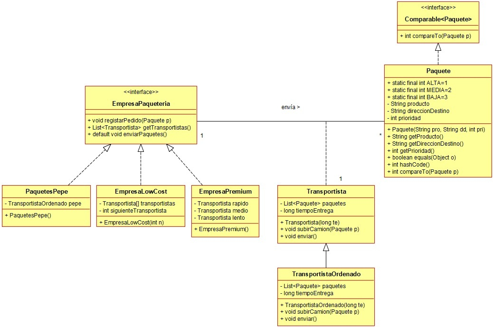

Ejercicio 20 : Siguiendo con el ejercicio anterior, programa la clase TransportistaOrdenado.

-
EmpresaPaquetería: Es una interfaz que define los requisitos que tiene que tener una clase para ser considerada una empresa de paquetería.
-
registrarPedido: Consiste en aceptar un pedido y asignarlo a un repartidor.
-
getTransportistas: Devuelve una lista con los transportistas que trabajan para la empresa de transportes.
-
enviarPaquetes: Es un método default que recorre la lista de transportistas y les ordena que envíen los paquetes que tienen asignados.
-
TransportistaOrdenado: Es un tipo de transportista, que cuando recibe la orden de enviar los paquetes, primero ordena la lista de paquetes por prioridad. A continuación, los envía de la forma indicada en el ejercicio anterior.